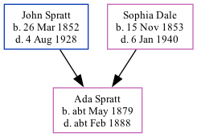

Ada Spratt cMay 1879 - c1888
[ Home ] | [ Calendar ] | [ Surnames Index ] | [ Family History ]The child of John Spratt (an agricultural laborer) and Sophia Dale, Ada Spratt, the great-aunt of <a href="I1.html">Nigel Horne</a>, was born in St Nicholas-at-Wade, Kent, England <i>c.</i> May 1879<span class="citation">1,2,3</span> and baptized there on Jun 1, 1879. On Apr 3, 1881, she lived at The Street in St Nicholas-at-Wade<span class="citation">6</span>. <p>She died <i>c.</i> Feb 1888 in Thanet, Kent, England<span class="citation">3,4,5</span> (JFM 1888 Thanet 2a 623 aged 8yrs Diptheria) and was buried in St Nicholas-at-Wade on Mar 1, 1888 (aged 8yrs. with brother Ernest. Verified at Margate library 24 Mar 2010)<span class="citation">5</span>.
Parents
- John was born on Mar 26, 1852
- Sophia was born on Nov 15, 1853
Citations
- 1881 England Census Online publication - Provo, UT, USA: The Generations Network, Inc., 2004. 1881 British Isles Census Index provided by The Church of Jesus Christ of Latter-day Saints © Copyright 1999 Intellectual Reserve, Inc. All rights reserved. All use is subject to the
- England & Wales, FreeBMD Birth Index, 1837-1915 Online publication - Provo, UT, USA: The Generations Network, Inc., 2006.Original data - General Register Office. England and Wales Civil Registration Indexes. London, England: General Register Office. © Crown copyright. Published by permission of the Cont
- England & Wales, FreeBMD Death Index: 1837-1915 Online publication - Provo, UT, USA: The Generations Network, Inc., 2006.Original data - General Register Office. England and Wales Civil Registration Indexes. London, England: General Register Office. © Crown copyright. Published by permission of the Cont
- England & Wales deaths 1837-2007 - Findmypast
- Public Member Trees Online publication - Provo, UT, USA: The Generations Network, Inc., 2006.Original data - Family trees submitted by Ancestry members.Original data: Family trees submitted by Ancestry members.
- 1881 England, Wales & Scotland Census - Findmypast (was age 2 and the daughter of the head of the household)
Media
England & Wales births 1837-2006 - BMD/B/1879/2/AZ/000529/014
England & Wales deaths 1837-2007 - BMD/D/1888/1/AZ/000373/302
1881 England, Wales & Scotland Census - GBC/1881/0004821590
Family Tree
Generated by Ged2Site. Last updated on Jul 20, 2025